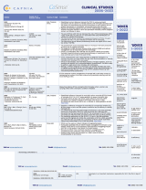

Clinical Resources
Review nearly 10 years of clinical research using the CoSense ® ETCOc monitor.
 Download the PDF top
CoSense Studies Table
| Citation | Sample size & Inclusion criteria | Country of origin | Conclusions |
|---|---|---|---|
| 2023 Christensen RD, Bahr TM, Pakeeto S, Supapannachart S, Zhang, HY. Current Ped. Reviews 2023, 19, 376-387 | USA, Thailand, China |
| |
| 2023 Yang G, Deng L, Zhang K, Yuan Y, Zhang H. Pediatric Academic Societies (PAS) Presentation, April 2023 | n=2500 < 35 wks, TB >40th percentile | China |
|
| 2023 Du L. Pediatric Academic Societies (PAS) Presentation, April 2023 | Review of studies |
| |
| 2023 Christensen RD, Bahr TM, Wong RJ, Vreman HJ, Bhutani VK, Stevenson DK. J Perinatol. 2023 Jul 19. | Clinically available tests for hemolysis | USA |
|
| 2022 Bao Y, Zhu J, Ma L, Zhang H, Sun L, Xu C, et al. J Pediatr.2022;250:16–21.e3. | L, Xu C, et al. J Pediatr.2022;250:16–21.e3. 455 35-42 wks, 2500g, 12-120 HOL | China |
|
| 2023 Yang G, Deng L, Zhang K, Yuan Y, Zhang H. Pediatric Academic Societies (PAS) Presentation, April 2023 | n=2500 < 35 wks, TB >40th percentile | China |
|
| 2021 Bahr TM, Shakib JH, Stipelman CH, Kawamoto K, Lauer S, Christensen RD. J Pediatr. 2021 Nov;238:168-173.e2. | 170 Infants receiving phototherapy | USA |
|
| 2020 Elsaie AL, Taleb M, Nicosia A, Zangaladze A, Pease ME, Newton K, Schutzman DL. J Perinatol. 2020 Oct;40(10):1513- 1517. | 191 < 35 wks, ETCOc and DAT positive | USA |
|
| 2023 Ruparel JN, Madani A, Escovedo C, Henry A, Nadar K, Rabizadeh S, Bhutani V, Berger G, Reanton G, and Mirocha J. American Academy of Pediatrics (AAP) Presentation, Oct 2023 | 122+600 < 35 wks, TB >75th percentile, 122 intervention, 600 control | USA |
|
| 2023 Christensen RD, Bahr TM, Wong RJ, Vreman HJ, Bhutani VK, Stevenson DK. J Perinatol. 2023 Jul 19. | Review of studies |
|